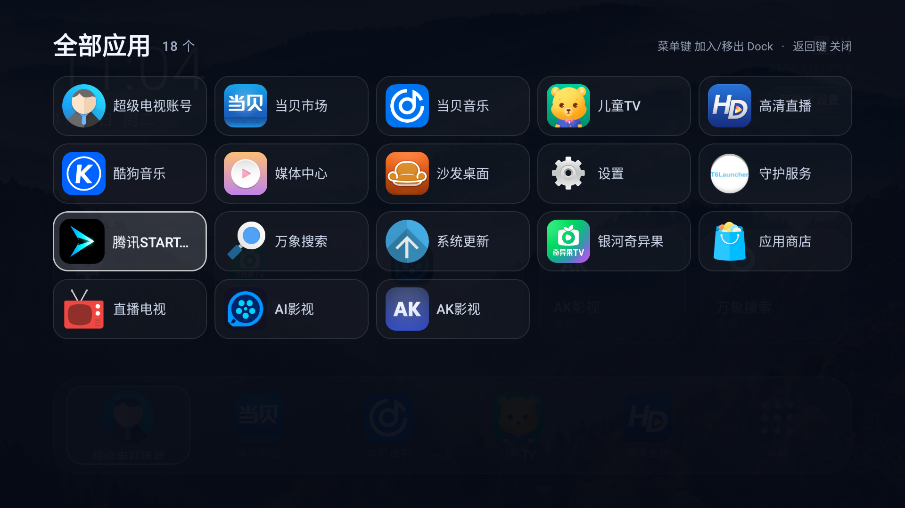
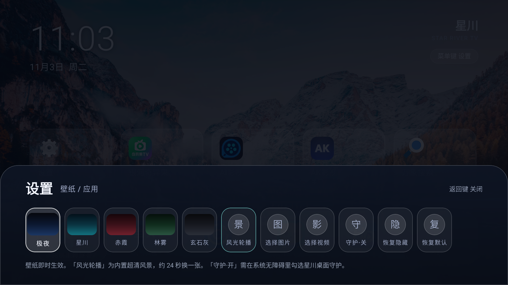
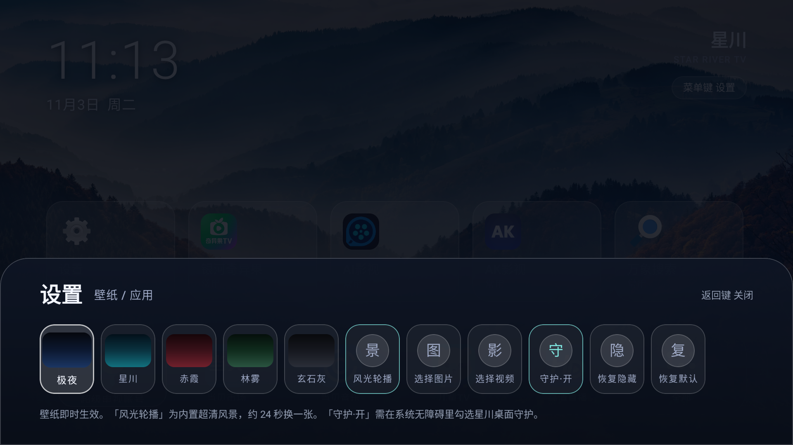

星川只做一件事：当好一个桌面。它不推送内容、不请求账户、不停用任何系统应用。
按 Banner 图 → Activity 图标 → 应用图标 三级解码，自适应图标自动处理， 宽幅 Banner 中心裁切、方形图标完整铺满。内存走 LruCache 按字节淘汰，低端电视也不卡。 实机 18 个应用图标全部正确显示。
内置 6 张 4K 自然风光图，24 秒交叉淡入 + 缓慢推近，像一扇缓缓变换的窗。 按屏幕宽度降采样加载，1080p 电视不浪费一比特内存。也可以换成你自己的图片或视频。
部分国产固件会用显式组件把原厂桌面拉回前台，绕过用户选定的 HOME。星川用无障碍服务 只监听「前台切到了哪个包」（canRetrieveWindowContent=false，读不到屏幕内容）， 发现原厂桌面就把星川拉回来，实测 1.5 秒内完成。不停用、不卸载任何系统应用。
底部 Dock 均分 7 个常用应用 + 全部应用入口；推荐位 5 个，按真实启动频次排序—— 是你自己用出来的顺序，不是运营编辑挑的。应用抽屉网格排布，遥控器五向键全程可达。
注册开机自启，重启电视后直接进入星川，不需要按一次主页键「激活」。 已在 Android 9 实机验证：重启完成 → 前台即星川桌面。
桌面不发起任何网络请求，不读取账户、不注册通知监听、不申请 WRITE_SECURE_SETTINGS。 壁纸全部内置在 APK 里。它是一块离线的画布，不是一双在线的眼睛。
以下均来自真机 adb screencap 原图，未修饰。



差别只有一个：清单里有没有 HOME 声明。先试标准版；固件拒绝再换守护版。
| 形态 | 文件 | 适用 |
|---|---|---|
| 标准版 standard v1.0.0 · 声明 HOME |
app-standard-release.apk |
默认选它。大多数电视可用，能被系统设为默认桌面。 |
| 守护版 guard v1.0.0-guard · 不声明 HOME |
app-guard-release.apk |
固件拒绝安装声明 HOME 的 APK 时用（TCL/雷鸟、部分海信，以及实测中主页键被 com.stv.* 劫持的机型）。装上后是普通应用，靠桌面守护常驻前台。 |
starriver/app/build/outputs/apk/standard/release/app-standard-release.apk
和 …/guard/release/app-guard-release.apk。也可以自行编译：
./gradlew assembleStandardRelease（用 assembleGuardRelease 出守护版）。
装之前先核对 SHA-256，确认拿到的是同一个包、没有被篡改或截断：
# standard · v1.0.0 eeb2d8b10454cb8fb3e688bd16d62793324b0d669fee8cc7e7779cfdf42d232d app-standard-release.apk # guard · v1.0.0-guard 2537948b221bc3d8491ec24dbfb743a3b282c38c9e80c9d88ce3fae91e109ea8 app-guard-release.apk
也可以校验签名：apksigner verify --print-certs app-standard-release.apk。不要用来路不明的转载包。
一台电脑，和电视连在同一个 Wi-Fi； 一个装在这台电脑上、能替你动手的 AI（例如 WorkBuddy、Claude Code、Codex、豆包电脑版）。 只会聊天的手机网页做不到——它要在你的电脑上亲自跑命令。
设置 → 关于 → 连点「版本号」进开发者选项 → 打开「USB 调试 / 网络调试（ADB）」。 IP 地址在 设置 → 网络 里，四段数字，例如 192.168.1.20。
# 在电脑上执行，把 IP 换成你的
adb connect 192.168.1.20:5555
adb devices
电视弹出「允许 USB 调试吗？」→ 勾选一律允许 → 允许。 显示 unauthorized 就是还没在电视上点允许。
这一步是回滚的唯一依据。执行者必须把结果原样贴给用户，恢复时按原值写回。
adb -s 192.168.1.20:5555 shell getprop ro.build.version.sdk adb -s 192.168.1.20:5555 shell getprop ro.product.model adb -s 192.168.1.20:5555 shell cmd package resolve-activity --brief \ -a android.intent.action.MAIN -c android.intent.category.HOME adb -s 192.168.1.20:5555 shell settings get secure screensaver_components adb -s 192.168.1.20:5555 shell settings get secure enabled_accessibility_services adb -s 192.168.1.20:5555 shell settings get secure enabled_notification_listeners
adb -s 192.168.1.20:5555 install -r app-standard-release.apk
# 期望输出：Success
报 INSTALL_FAILED_VERIFICATION_FAILURE（TCL 常见）→ 改用守护版，
推到电视上用文件管理器安装：
adb -s 192.168.1.20:5555 push app-guard-release.apk /sdcard/Download/xingchuan-guard.apk。
报签名不匹配 → 先找回原来的签名密钥，不要自动卸载。
adb -s 192.168.1.20:5555 shell cmd role add-role-holder --user 0 android.app.role.HOME app.xingchuan.tv adb -s 192.168.1.20:5555 shell cmd package set-home-activity app.xingchuan.tv/.MainActivity adb -s 192.168.1.20:5555 shell input keyevent KEYCODE_HOME
resolve-activity 仍报旧桌面属正常现象。
按一次主页键看结果：落到原厂桌面 → 进入第 5 步开守护。
只有在第 4 步之后主页键仍被抢时才需要。状态的唯一来源是系统无障碍开关：
# 先读原值！非 null 时必须在其后追加，不要覆盖 adb -s 192.168.1.20:5555 shell settings get secure enabled_accessibility_services adb -s 192.168.1.20:5555 shell settings put secure enabled_accessibility_services \ app.xingchuan.tv/app.xingchuan.tv.core.GuardService adb -s 192.168.1.20:5555 shell settings put secure accessibility_enabled 1 adb -s 192.168.1.20:5555 shell "dumpsys accessibility | grep label=" # 出现 星川桌面守护 才算成功
也可以在电视上操作：按菜单键 → 设置 → 守护 → 确定跳转无障碍设置 → 勾选「星川桌面守护」。 Android 13+ 需先在 应用 → 星川 → 允许受限设置。
adb -s 192.168.1.20:5555 shell pm path app.xingchuan.tv adb -s 192.168.1.20:5555 shell input keyevent KEYCODE_HOME adb -s 192.168.1.20:5555 shell "dumpsys window | grep mCurrentFocus" adb -s 192.168.1.20:5555 shell screencap -p /sdcard/xingchuan-check.png adb -s 192.168.1.20:5555 pull /sdcard/xingchuan-check.png .
拉回截图自己看一眼再下结论。四项分开报：安装 / 主页键 / 待机唤醒 / 开机。 没实际跑过的项，不许写「通过」。
不想自己敲命令？复制下面这段，发给你电脑上的 AI。它会读执行手册，在你的电脑上亲自安装、验证、并把原始输出贴给你。
请阅读星川项目 starriver/AGENTS.md（执行手册），在这台电脑上把星川装到我的电视上。 电视的四段数字：（把电视 IP 填在这里） 要求： 1. 先做第 2 节「记录现场」，把 7 条命令的原始输出原样贴给我，再动手安装。 2. 只做手册里写的事：不停用任何系统应用，不卸载旧版，不清空数据，不重启电视（需要重启先问我）。 3. 签名不匹配时先找原密钥，不要自动卸载。 4. 安装、主页键、待机唤醒、开机四项分开报，没实际跑过的写「未测」，不要写通过。 5. 装完按第 10 节贴出验收命令的原始输出。
install -r 在旧版上装新版，设置和布局保留。前提是两版签名一致。复制下面的文字，发给帮你安装的那个 AI：
请阅读星川项目 AGENTS.md 里第 8 节「回滚」，在这台电脑上亲自做。 电视上的四段数字：（把电视 IP 填在这里） 把画着房子的键换回电视出厂时的主屏幕。先不要卸载星川。 不要猜原来的主屏幕叫什么名字——用安装时第 2 步记录的组件。 不要重启或关掉电视，除非我同意。 做完后用白话告诉我：我按画着房子的键，看到的是不是原来的主屏幕。
机型 Droidlogic ak30a4 · Android 9（SDK 28）· 1920×1080 · 2026-11-03 · 192.168.0.2
| 验收项 | 结果 | 依据 |
|---|---|---|
| 安装 | 通过 | install -r → Success；pm path 有返回；18 个应用图标全部正确显示 |
| 主页键 | 通过（依赖守护） | 未开守护时落到 com.stv.deskplatform；开守护后连按 3 次均在 1.5 秒内回到星川，无来回抢焦点，logcat 无 ANR |
| 开机自启 | 通过 | 重启电视后，开机完成直接进入星川桌面，无需手动按键（2026-11-03 用户实机确认） |
| 待机唤醒 | 未测 | 需要用户按遥控器电源键，尚未执行（不能用 adb 发电源键，会真的关机） |
| 设置面板 / 抽屉 | 通过 | 11 格设置不溢出；抽屉 18 项五向键可达 |
「未测」就写未测。这份记录随每次实机验证更新。
set-home-activity 返回 Success），
但厂商守护进程直接按包名拉起自己的桌面，绕过 HOME 解析。这在实测的 com.stv 平台上必然发生。
解法是开启桌面守护——原厂桌面一到前台就在约 1.5 秒内把星川拉回来。此时 resolve-activity 仍报旧桌面，属正常现象。canRetrieveWindowContent=false，只收到「前台切换到了哪个包」这一件事。
星川不注册通知监听、不读取账户、不发起任何网络请求。app-standard-release.apk，adb install -r 覆盖安装即可，设置和布局会保留。
前提是签名一致——签名不匹配时先找回原签名密钥，不要直接卸载重装。